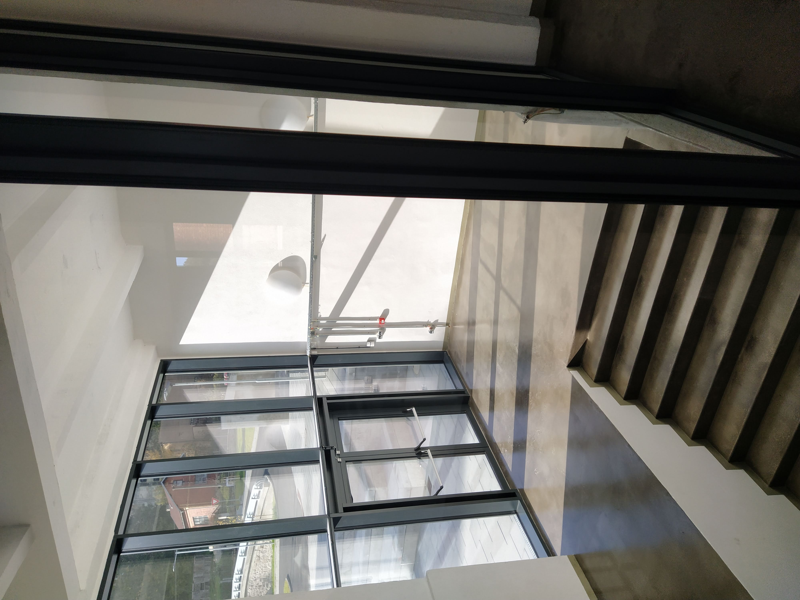
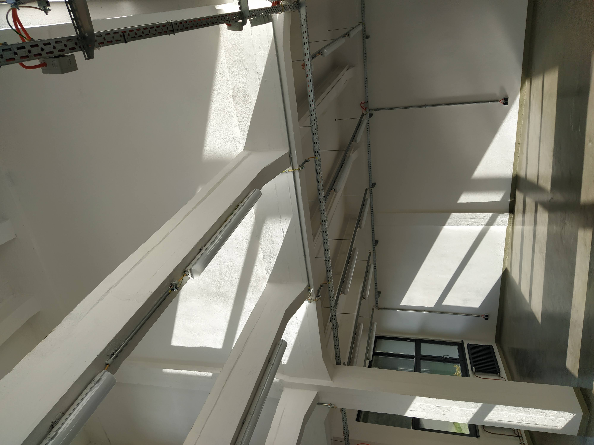

Realizace
Vybrané projekty, které ukazují šíři naší práce — od industriálních objektů po kulturní instituce.
TOSTA Plesná
Kompletní elektroinstalace v rekonstruované textilní továrně: silnoproud, požární rozvody,
nouzové osvětlení, elektronická požární signalizace (EPS), zabezpečení (EZS)
a systém přivolání pomoci.



Národní muzeum — Dějiny 20. století
Projekční příprava elektroinstalace stálé výstavy včetně řízení osvětlení a multimédií
přes DALI. Spolupráce od architektonického modelu po realizační úpravy.
Chebský hrad — hradní kaple
Realizace v kapli sv. Erharda a Uršuly na Chebském hradě — úprava podlahy, nátěr střechy
a oprava osvětlení v historickém objektu.
Poptat podobnou zakázku
Veřejné osvětlení — Skalná
Modernizace veřejného osvětlení ve Skalné — stožáry, svítidla a napájení
pro bezpečnější a úspornější provoz obce.
Fotovoltaika na sídle firmy
Vlastní FVE v Chebu — od návrhu přes montáž panelů po připojení.
Stejný přístup nabízíme i zákazníkům v regionu.
Více o FVE